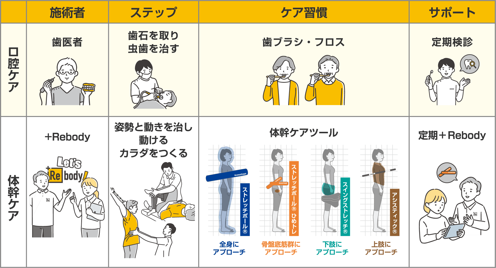
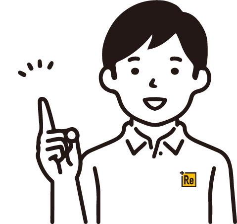

セルフコンディショニングツールを
活用する必要性
ー「施術だけ」では、
カラダは変わりきらない理由ー
岸和田の HAREYAKA+Rebody 整骨院で施術を受けて
「軽くなった」「動きやすい」と感じる方は多くいらっしゃいます。
しかし、その状態を日常生活の中で保てなければ、
カラダはまた元の状態に戻ってしまいます。
これは歯科治療と同じです。
歯医者で虫歯を治しても、歯磨きをしなければまた悪くなる。
虫歯を治し、歯石を取っても、自宅での歯磨き（口腔ケア）がなければ
健康は維持できません。
カラダも同じです。
岸和田の HAREYAKA+Rebody 整骨院で
・姿勢が整う ・体幹が働く ・動きが改善する
という状態になっても、日常生活のクセや動作に戻れば、
また体幹が働きにくい状態に戻ってしまいます。
だからこそ必要なのが自宅で続けられる体幹ケア習慣
そしてその習慣を支えるのが、体幹ケアツールです。

ツールを使う 3つ の理由

① 施術の効果を長持ちさせるため
施術で整ったカラダも、日常の姿勢や動きのクセで
バランスはすぐに崩れてしまいます。
ツールを活用することで整った状態を維持しやすくなります。
施術とセルフケアを組み合わせることで、カラダの変化はより安定していきます。
②正しい動きの軌道をカラダに覚えさせるため
岸和田の HAREYAKA+Rebody 整骨院では
正しい動きの軌道を再教育することを大切にしています。
ツールは、その動きの軌道を生活の中で再現しやすくする補助装置です。
言い換えれば「良い動きの練習台」のような役割を持っています。
正しい動きを繰り返すことで、カラダは少しずつ本来の使い方を思い出していきます。
③セルフコンディショニングができるようになるため
岸和田の HAREYAKA+Rebody 整骨院が目指しているのは
「自分のカラダを自分で整えられる状態」です。
そのためには
・背骨・骨盤・胸郭・骨盤底筋群
といった体幹の重要な部分に自分でアプローチできることが大切になります。
ツールを活用することで、自宅でも体幹ケアを行えるようになります。
セルフケアが身につくほど、健康自立に近づいていきます。